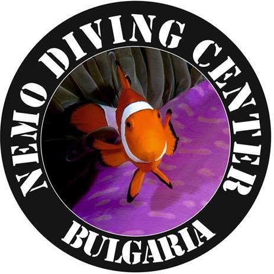
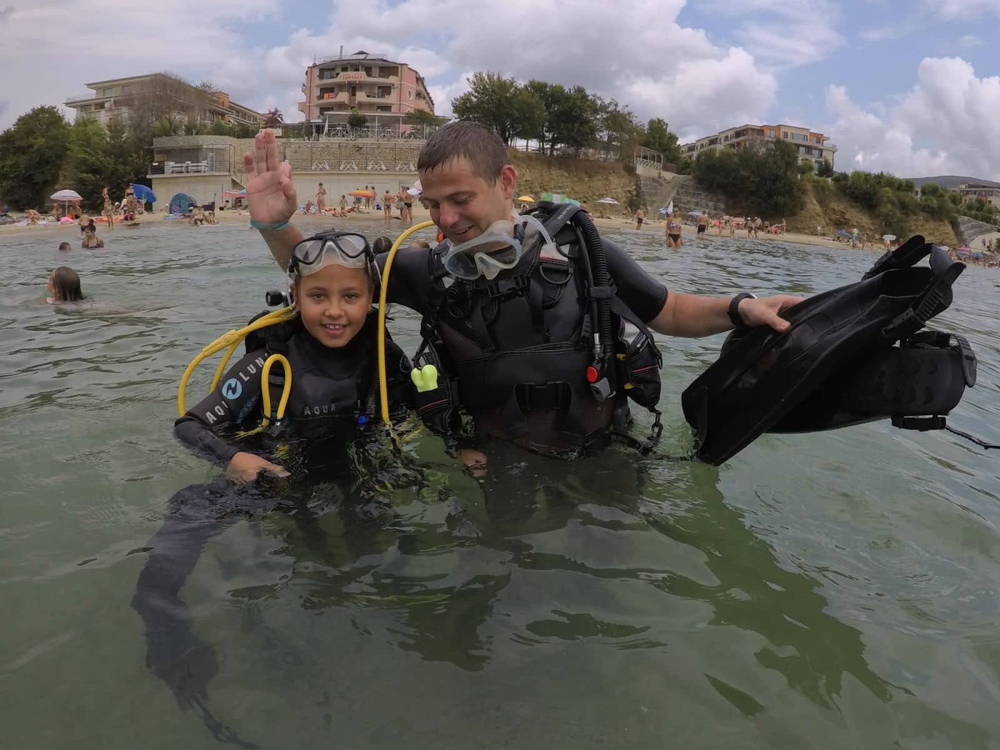

Без опит
↗
Първо гмуркане
Въвеждащ инструктаж, пълна екипировка, инструктор във водата и подводни снимки.

NEMODiving Center BulgariaНесебър · Черно море
От първо гмуркане до следващата ти сертификация. Спокойно темпо, ясни инструкции и Черно море отблизо.
Твоят вход към подводния свят

Първо гмуркане с NEMO · НесебърNEMO Diving Center Bulgaria е водолазен център в Несебър, създаден за хора, които искат да открият подводния свят безопасно и без излишно напрежение.
Центърът предлага PADI обучение, гмуркания за напълно начинаещи, програми за сертифицирани водолази и пълна екипировка. Базата разполага с учебни материали, компресор и собствен транспорт.
Посочените данни са от публични туристически и водолазни каталози и подлежат на потвърждение от клуба.
Избери своята дълбочина
Всички програми включват инструктаж и необходимата екипировка, освен ако клубът не потвърди друго при резервация.
Въвеждащ инструктаж, пълна екипировка, инструктор във водата и подводни снимки.
Теория, упражнения в контролирана среда и открити води. Първата ти международна сертификация.
Развий навигацията, плаваемостта и опита си при по-дълбоки и различни типове гмуркания.
Брегови или лодъчни гмуркания, рифове и останки според нивото, условията и дневния план.
Комплект или отделни компоненти. Размерът и наличността се потвърждават предварително.
Цената „от 50 €“ следва публична промоционална оферта. Клубът потвърждава актуалната цена, включените услуги и условията преди резервация.
От брега към дълбочината
Емблематичната мелница посреща града, а само на няколко крачки морето отваря съвсем различна гледка. Подводните маршрути се избират в деня на гмуркането според опита на групата и условията.
Попитай за следващото гмурканеПод повърхността
Хората до теб
Клубът работи с квалифицирани водолазни инструктори. Имената и актуалните квалификации се потвърждават преди публикуване.

PADI обучение · водене на групи · първи гмуркания
„Под водата няма нужда да бързаш. Дишаш, оглеждаш се и следваш човека до теб.“
NEMO принцип
Локални сайтове · екипировка · подводна фотография
отзива в Tripadvisor
Готов ли си?
Изпрати запитване. Екипът ще потвърди часа, цената и подходящия сайт според опита и условията.
+359 893 360 387Намери ни край морето